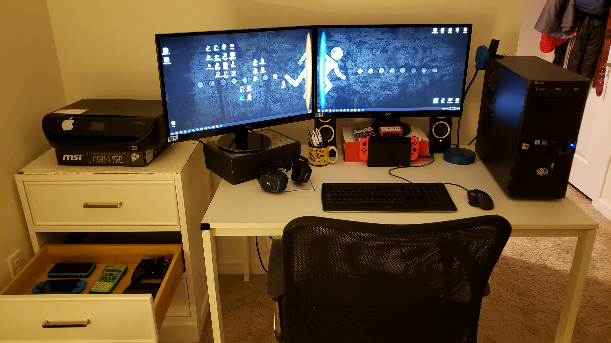
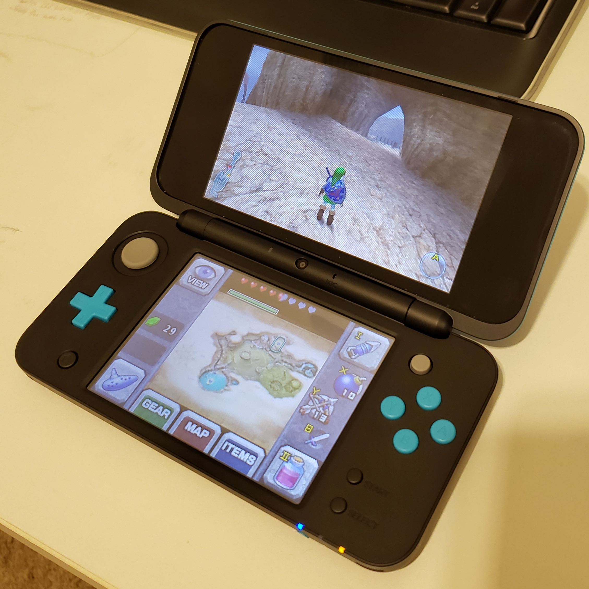

It's my girlfriend's birthday!
She's the best. She's a law student, speaks 3 languages, can sing, dance, even play the piano now. I could go on about a thousand reasons to love this girl but then I'll be jealous of whoever's reading :) Happy birthday Leka! There's truly no one like you. ♥
Some personal updates
I have a new base of operations now. I no longer have to feel stuck in that tiny room, but most importantly, I have a second screen back!

Also, since we're doing life updates in my little blog, here's an update for my game colection, a New 2DS XL. Now I can play Ocarina of Time and Majora's Mask remasters in... uh... 240p. Should I have used an emulator instead? Maybe, but I always wanted a 3DS, and now I got one, and that's awesome too. I just wish they still sold actual 3DS systems so I can see what the 3D effect is like, but since this is the only system still being sold new, I didn't have much of a choice. Plus you can't beat $99!

This link literally takes you right back here (or to an archive of here.. hm... Hello time traveler!) Isn't it great? I feel like this is the best thing I've ever created online, but hopefully I will have even better websites later! :)
Just a simple calculator to demonstrate a hint of JavaScript. You may have noticed I started using the same CSS file from before. The reason is simply to keep everything on the same theme, I'm sure every web developer does this, right? Well, now that I started HTML5 & CSS3, I have a new CSS file to use from now on, that is much much much better.
So... this was supposed to be the one where I add CSS to the homepage. But I already did this before, so... I will just link you to the same thing.
Just a big form with multiple inputs that lead nowhere. I think it looks great, but there's no JavaScript, so it doesn't really work. Maybe one day it will?
Table. Just a big, simple table, with made up stats. I stole the names from my favorite cartoon, and used CSS and HTML to make a cool table.
Now it gets interesting. I finally started using CSS, so I can actually center stuff, use good fonts, sizes, etc. I used this website as my hub up until this new one launched. (as I am typing, it hasn't yet!)
Here's where links were introducted, and some other little concepts too. You can see the slight improvement beginning to take form.
This was when I was learning forms, I think. It's still the boring HTML-only format, but still a step up with picutes and lists.
This is the first assignment for the class, I though it was okay at the time but it doesb't compare to what I am able to do now. I am still proud of it though, and perhaps someday I will look at this very website and call it ugly, for I will have a new, better website.
Welcome!
This is the first article.
Hello :)